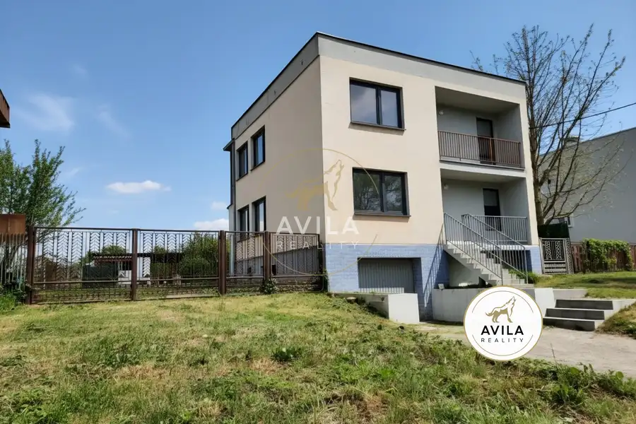
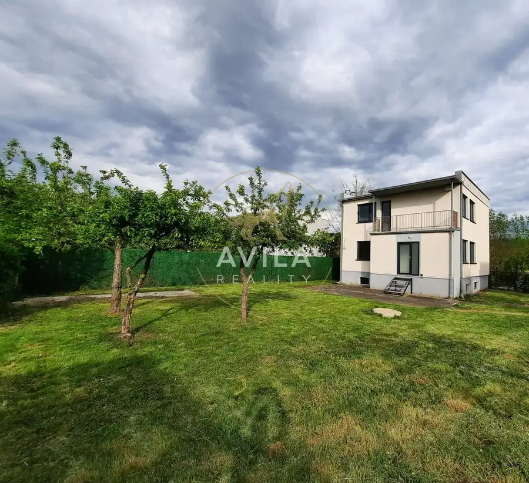
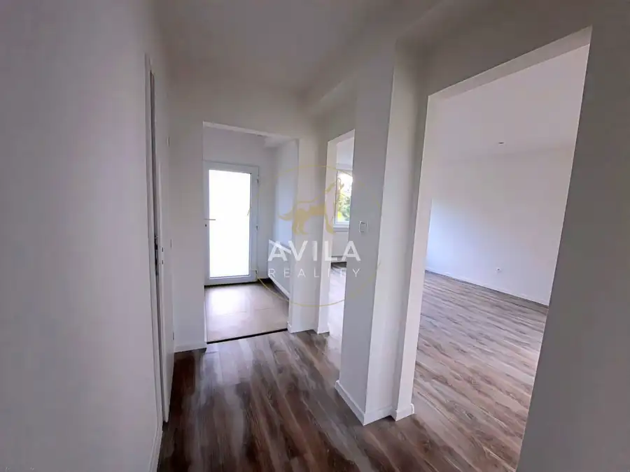
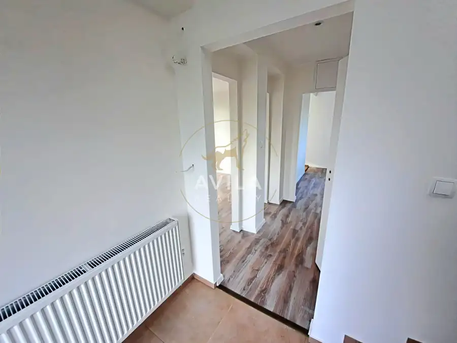
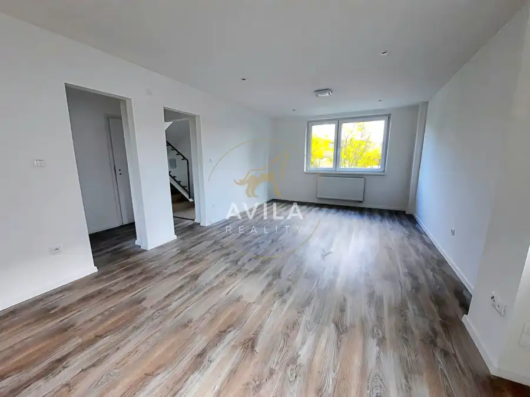
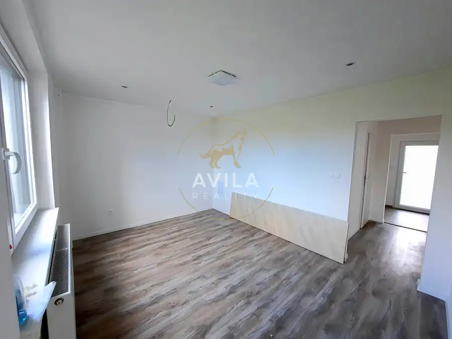
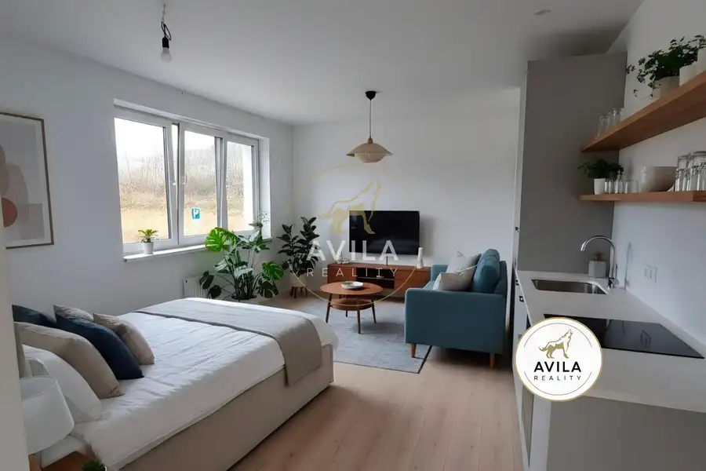
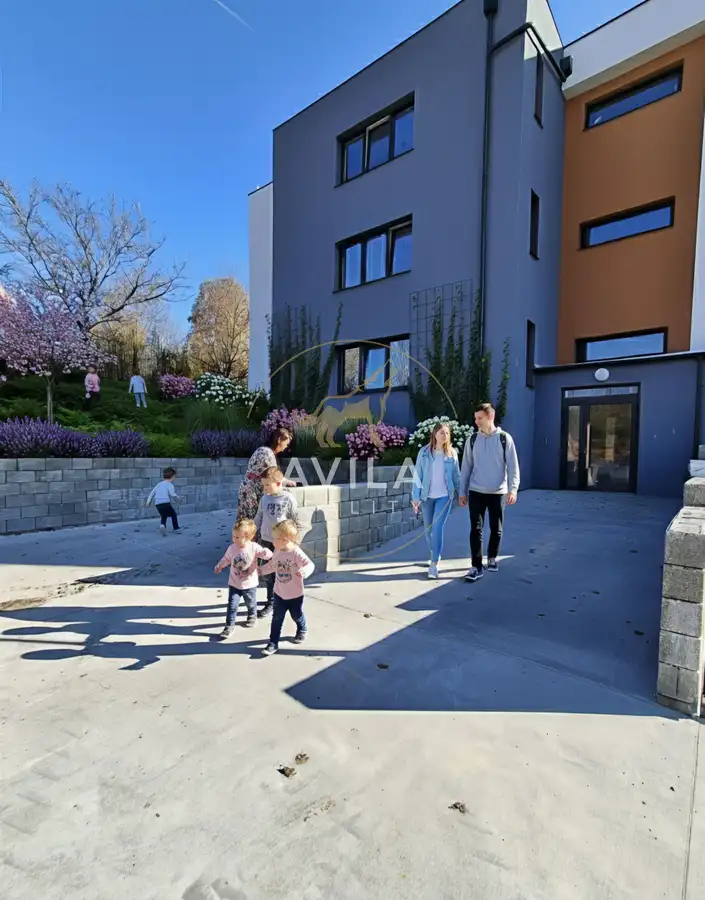
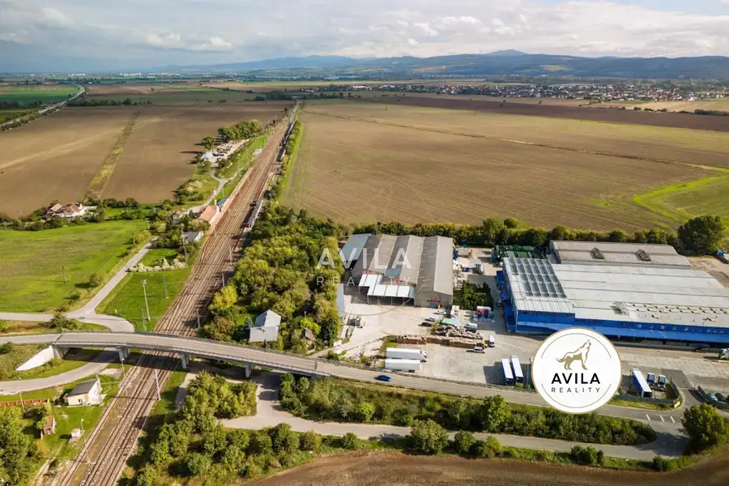

AVILA-Kompletne zrekonštruovaný rodinný dom v Dolnom Srní – pokojná lokalita, kvalitná stavba, moderné vybavenie
Dolné Srnie






- Plocha240 m²
- StavKompletná rekonštrukcia
- VlastníctvoOsobné
- Energetická triedaD
O nehnuteľnosti
Na predaj priestranný rodinný dom v obci Dolné Srnie, ktorý prešiel kompletnou, profesionálnou a detailnou rekonštrukciou ukončenou v roku 2022. Dom je ideálny pre rodinu, ktorá hľadá tiché bývanie v bezpečnej obci, výbornú dostupnosť do miest a nehnuteľnosť bez nutnosti ďalších investícií.Dolné Srnie je pokojná obec obklopená zeleňou, známa svojím tichým prostredím a príjemnou komunitou. Rýchla dostupnosť do Nového Mesta nad Váhom (7 min), výborné napojenie na diaľnicu D1 (10 min), blízkosť prírody – Biele Karpaty, turistické chodníky, cyklotrasy, bezpečná lokalita vhodná pre rodiny s deťmi, minimálna premávka, čistý vzduch, pokojné susedstvo.Dom stojí na tichej ulici, má priamy prístup z hlavnej cesty a ponúka komfortné parkovanie priamo pred domom. Rekonštrukcia od základov – všetko novéV rokoch 2021–2022 prebehla totálna vnútorná rekonštrukcia, ktorá zahŕňala:•kompletnú výmenu elektriny (230/400V)•nové rozvody vody, kanalizácie, kúrenia•nový kondenzačný kotol BAXI Nuvola•nové okná Trocal 88+ s trojsklom U=0,6•nové radiátory, podlahy, dlažby, obklady•nové kúpeľne na oboch podlažiach•nové dvere, parapety, zárubne•predprípravu na klimatizáciu, rekuperáciu, kamerový systém, optiku•renováciu strechy s kvalitnou hydroizoláciou a reflexným náteromRekonštrukcia bola realizovaná tak, aby dom bolo možné využívať ako jednu veľkú rodinnú nehnuteľnosť, alebo ho jednoducho rozdeliť na dve samostatné bytové jednotky – každé podlažie má samostatné rozvody elektriny aj vody. Dispozícia:PIVNICA – technické centrum domu + veľké využiteľné priestory(plná podpivničenosť, samostatný východ do záhrady)1) Bývalá garáž – 8,3 × 3,5 m2) Kotolňa / bývalá skladovňa uhlia – 3,0 × 4,2 m3) Technická miestnosť – 1,7 × 2,8 m4) Odkladací priestor – 0,9 × 4 m5) Chodba + schodište 1. NADZEMNÉ PODLAŽIE (vyvýšené prízemie)(plnohodnotné bývanie, možnosť vytvoriť 2 izby z obývačky)1) Veľká obývačka – 6,5 × 3,7 m•možnosť rozdeliť na dve nepriechodné izby•každá izba má vlastný vchod, okno, radiátor, zásuvky, PC rozvody, TV rozvody2) Jedáleň – 3,1 × 4,1 m3) Kuchyňa – 1,8 × 3,7 m4) Zázemie kuchyne / špajza – 0,9 × 3,5 m5) Kúpeľňa – 1,8 × 2,8 m6) Zádverie – 1,7 × 1,2 m7) Chodba – 2,3 × 1,2 m8) Loggia pri vstupe – 1 × 4,1 m9) Vnútorné schodište 2. NADZEMNÉ PODLAŽIE (1. poschodie)(3 izby, kúpeľňa, loggia, balkón, predpríprava na kuchyňu – možnosť samostatného bytu)1) Izba – 4,2 × 3,7 m2) Izba – 4,2 × 3,7 m3) Izba s balkónom – 3,1 × 4,1 m•balkón 1,0 × 4,7 m•kompletná predpríprava na kuchyňu:4) Kúpeľňa – 1,8 × 2,8 m5) Chodba – 4,2 × 1,2 m6) Loggia – 1 × 4,1 m7) Balkón – 1 × 4,7 m8) Vnútorné schodište Pozemok a exteriér•upravená záhrada s rodiacimi jabloňami•veľká betónová plocha za domom (altánok, posedenie)•privedená voda a chránička na elektrinu•ďalšia betónová plocha v zadnej časti pozemku•predpríprava na optický internet Energetická úspornosťPo rekonštrukcii sa dom posunul do energetickej triedy D (pôvodne F). Úspora primárnej energie: 40,75 %. Prečo je tento dom výnimočný•všetko nové – kompletná rekonštrukcia•možnosť dvoch bytových jednotiek•výborná dostupnosť do mesta aj na diaľnicu•kvalitné materiály a profesionálne prevedenie•pripravený na moderné technológie•ideálny pre rodinu, podnikateľa aj investoraCena: 249000,-€Kontakt: Andrej Pakantel.: 0908 118913e-mail: andrej.pakan@avilareality.sk
Parametre
- Doprava
- Diaľnica, MHD, Cesta
- Druh
- Rodinný dom
- Druh domu
- Klasický dom
- Dátum zverejnenia
- 09. 09. 2026
- Energetický certifikát budovy
- D
- Plocha pozemku
- 396 m²
- Podpivničenie
- Úplné
- Počet balkónov
- 1
- Počet izieb / miestností
- 5
- Počet kúpeľní
- 2
- Počet lodžií
- 2
- Počet nadzemných podlaží
- 2
- Počet podzemných podlaží
- 1
- Počet spální
- 3
- Prístupová komunikácia
- Asfaltová
- Rok poslednej rekonštrukcie
- 2022
- Rok výstavby
- 1980
- Stav nehnuteľnosti
- Kompletná rekonštrukcia
- Telekomunikácie
- Optická sieť, Internet
- Terén pozemku
- Rovinatý
- Typ
- Predaj
- Typ konštrukcie
- Zmiešaná
- Vlastníctvo
- Osobné
- Vybavenie
- Balkón, Lodžia, Terasa, Technická miestnosť, Záhrada, Sklad, Vyhradené parkovanie, Garáž, Špajza, Dielňa
- Vykurovanie
- Ústredné, Rekuperácia
- Zastavaná plocha
- 93 m²
- Zdroj tepla
- Zemný plyn
- Úžitková plocha
- 240 m²
Kde to je


Mohlo by Vás zaujímať

BytNové 80 300 €AVILA- 1 izbový byt v novostavbe, parkovacie miesto Nové Mesto nad Váhom 1-izbový36.5 m²2. podlažie
BytNové Cena na vyžádáníAVILA-prvé skolaudované 1, 2 a 3 izbové byty odovzdané, parkovacie miesto Lubina 2-izbový75 m²1. podlažie
Komerčné priestoryNové Cena na vyžádáníNa prenájom: Rozsiahla skladová hala 5 164 m² v priemyselnej zóne Madunice / Veľké Kostoľany (pri D1) Madunice 5164 m²